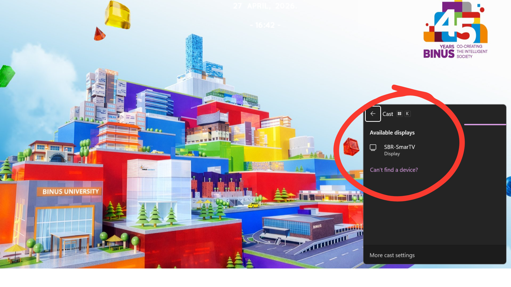
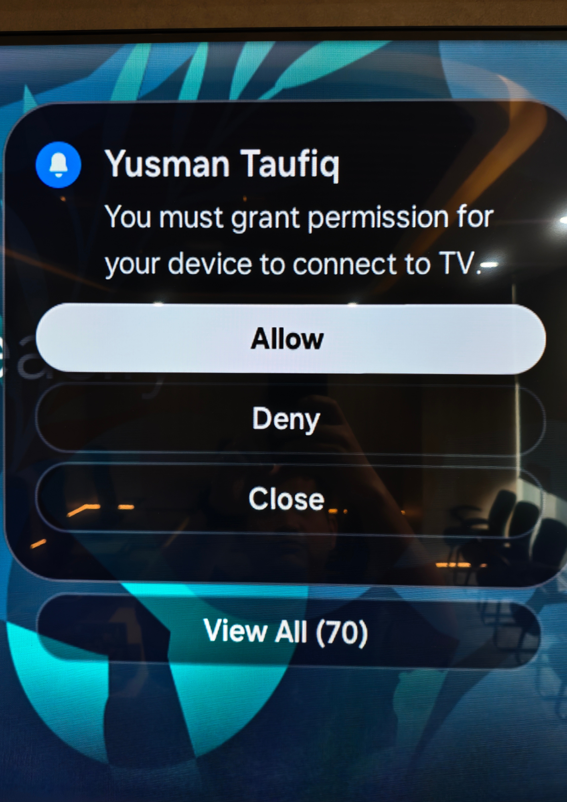

How do I connect to a meeting room TV?
You can connect to the meeting room TV via Windows
What do I need to check first?
-
Connect to one of the following Wi-Fi networks:
How to Connect to Wi-Fi
-
The device is already connected to the Wi-Fi network, Please make sure it is not connected to a VPN.
-
Ensure the meeting room system is turned on
Connecting to the TV in a meeting room via Windows
Steps to connect
Step 1:
Press the Windows key + K on your keyboard
Step 2:
The Cast panel will appear on the right side of the screen
Step 3:
Select the device named TV (SBR-SmartTV)

Step 4:
A notification will appear on the TV screen.
Please select Allow using the TV remote to verify the connection

Step 5:
Your screen will be displayed on the TV
Tips
-
Check network connection
-
Restart device if connection fails